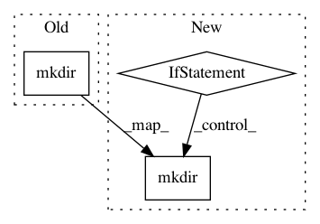

b8059aeaba0c65ee57276e3949015909cb205af5,tests/keras/preprocessing/test_image.py,,setup_function,#Any#,9
Before Change
def setup_function(func):
os.mkdir("test_images")
os.mkdir("test_images/rgb")
os.mkdir("test_images/gsc")
img_w = img_h = 20
After Change
def setup_function(func):
paths = ["test_images", "test_images/rgb", "test_images/gsc"]
for path in paths:
if not os.path.exists(path):
os.mkdir(path)
img_w = img_h = 20
for n in range(8):
bias = np.random.rand(img_w, img_h, 1) * 64
variance = np.random.rand(img_w, img_h, 1) * (255-64)
In pattern: SUPERPATTERN
Frequency: 3
Non-data size: 3
Instances
Project Name: keras-team/keras
Commit Name: b8059aeaba0c65ee57276e3949015909cb205af5
Time: 2016-04-14
Author: francois.chollet@gmail.com
File Name: tests/keras/preprocessing/test_image.py
Class Name:
Method Name: setup_function
Project Name: catalyst-team/catalyst
Commit Name: 4ba6e85223cdd4dd020f0414895b530c85d134cf
Time: 2020-01-12
Author: lightsanweb@yandex.ru
File Name: catalyst/dl/callbacks/logging.py
Class Name: ConsoleLogger
Method Name: on_stage_start
Project Name: NifTK/NiftyNet
Commit Name: a2538c4df2446fb4afd7700a3f63bf2ea208023e
Time: 2017-09-04
Author: d.shakir@ucl.ac.uk
File Name: doc/source/conf.py
Class Name:
Method Name: generate_apidocs